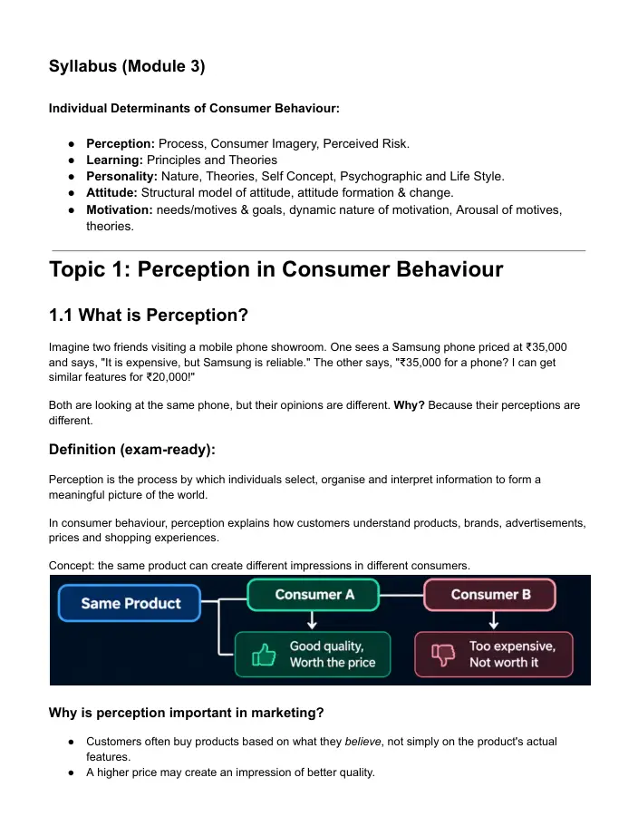
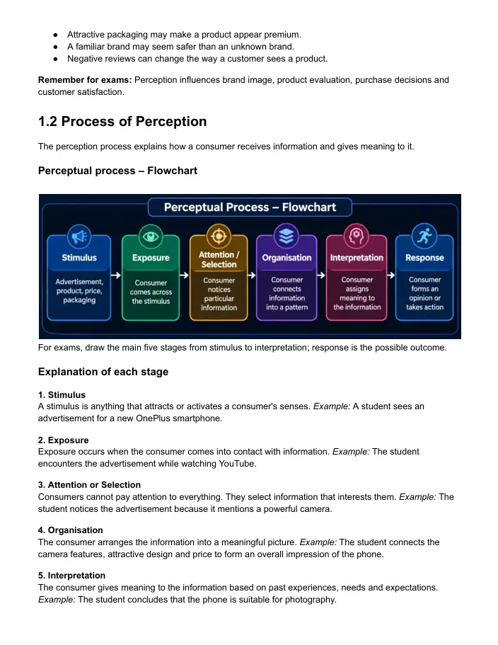
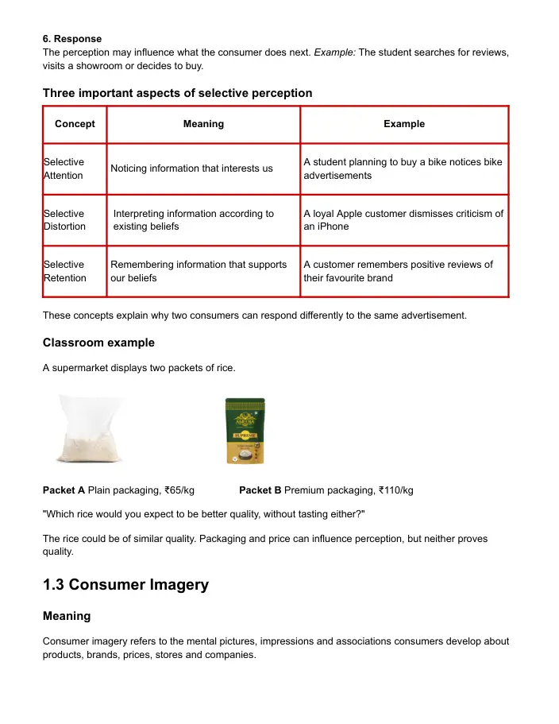
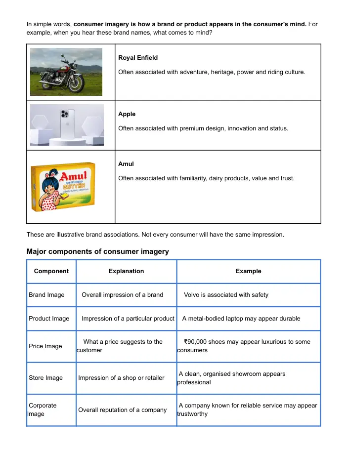
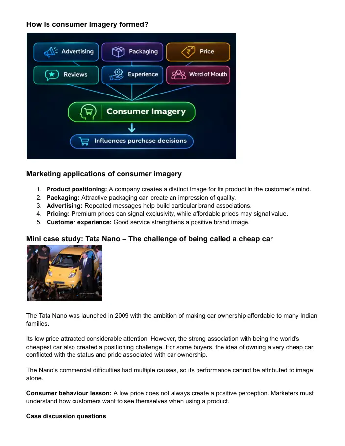
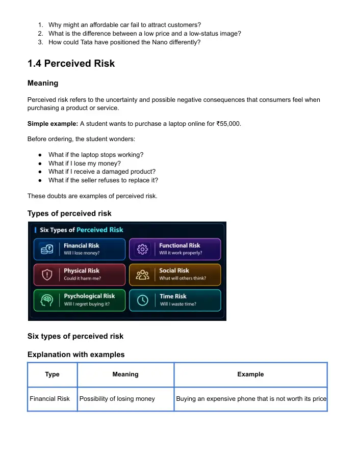
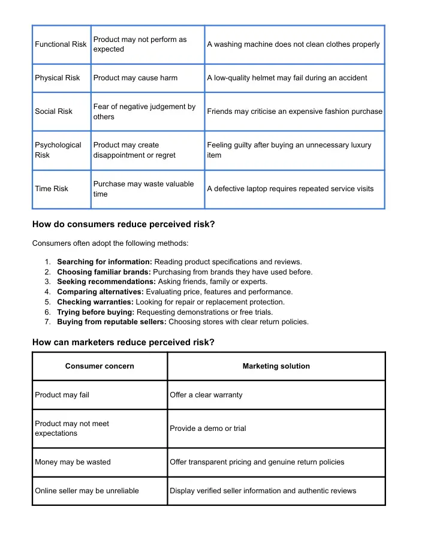
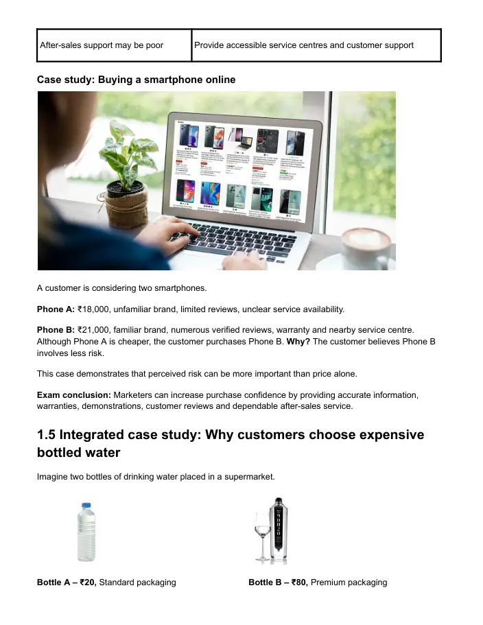
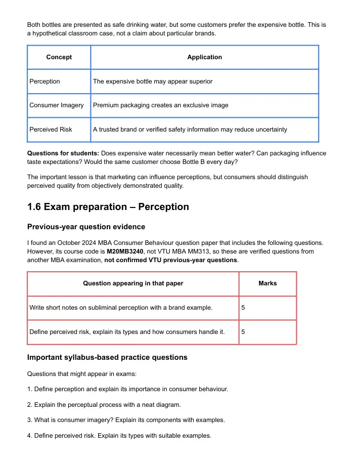
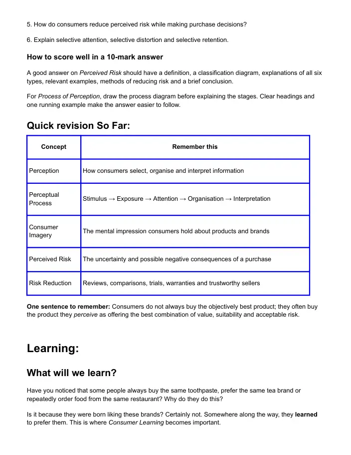

The notes below reproduce the attached Module 3 source pages as readable page images, preserving the original diagrams, case studies, definitions, examples and tables. Open any page; expand “Accessible text” to copy or search its content.
Source page 1 — open notes, diagrams and examples

Accessible text from this page
Syllabus (Module 3)
Individual Determinants of Consumer Behaviour:
● Perception: Process, Consumer Imagery, Perceived Risk.
● Learning: Principles and Theories
● Personality: Nature, Theories, Self Concept, Psychographic and Life Style.
● Attitude: Structural model of attitude, attitude formation & change.
● Motivation: needs/motives & goals, dynamic nature of motivation, Arousal of motives,
theories.
Topic 1: Perception in Consumer Behaviour
1.1 What is Perception?
Imagine two friends visiting a mobile phone showroom. One sees a Samsung phone priced at ₹35,000
and says, "It is expensive, but Samsung is reliable." The other says, "₹35,000 for a phone? I can get
similar features for ₹20,000!"
Both are looking at the same phone, but their opinions are different. Why? Because their perceptions are
different.
Definition (exam-ready):
Perception is the process by which individuals select, organise and interpret information to form a
meaningful picture of the world.
In consumer behaviour, perception explains how customers understand products, brands, advertisements,
prices and shopping experiences.
Concept: the same product can create different impressions in different consumers.
Why is perception important in marketing?
● Customers often buy products based on what they believe, not simply on the product's actual
features.
● A higher price may create an impression of better quality.
Source page 2 — open notes, diagrams and examples

Accessible text from this page
● Attractive packaging may make a product appear premium.
● A familiar brand may seem safer than an unknown brand.
● Negative reviews can change the way a customer sees a product.
Remember for exams: Perception influences brand image, product evaluation, purchase decisions and
customer satisfaction.
1.2 Process of Perception
The perception process explains how a consumer receives information and gives meaning to it.
Perceptual process – Flowchart
For exams, draw the main five stages from stimulus to interpretation; response is the possible outcome.
Explanation of each stage
1. Stimulus
A stimulus is anything that attracts or activates a consumer's senses. Example: A student sees an
advertisement for a new OnePlus smartphone.
2. Exposure
Exposure occurs when the consumer comes into contact with information. Example: The student
encounters the advertisement while watching YouTube.
3. Attention or Selection
Consumers cannot pay attention to everything. They select information that interests them. Example: The
student notices the advertisement because it mentions a powerful camera.
4. Organisation
The consumer arranges the information into a meaningful picture. Example: The student connects the
camera features, attractive design and price to form an overall impression of the phone.
5. Interpretation
The consumer gives meaning to the information based on past experiences, needs and expectations.
Example: The student concludes that the phone is suitable for photography.
Source page 3 — open notes, diagrams and examples

Accessible text from this page
6. Response
The perception may influence what the consumer does next. Example: The student searches for reviews,
visits a showroom or decides to buy.
Three important aspects of selective perception
Concept Meaning Example
Selective A student planning to buy a bike notices bike
Noticing information that interests us
Attention advertisements
Selective Interpreting information according to A loyal Apple customer dismisses criticism of
Distortion existing beliefs an iPhone
Selective Remembering information that supports A customer remembers positive reviews of
Retention our beliefs their favourite brand
These concepts explain why two consumers can respond differently to the same advertisement.
Classroom example
A supermarket displays two packets of rice.
Packet A Plain packaging, ₹65/kg Packet B Premium packaging, ₹110/kg
"Which rice would you expect to be better quality, without tasting either?"
The rice could be of similar quality. Packaging and price can influence perception, but neither proves
quality.
1.3 Consumer Imagery
Meaning
Consumer imagery refers to the mental pictures, impressions and associations consumers develop about
products, brands, prices, stores and companies.
Source page 4 — open notes, diagrams and examples

Accessible text from this page
In simple words, consumer imagery is how a brand or product appears in the consumer's mind. For
example, when you hear these brand names, what comes to mind?
Royal Enfield
Often associated with adventure, heritage, power and riding culture.
Apple
Often associated with premium design, innovation and status.
Amul
Often associated with familiarity, dairy products, value and trust.
These are illustrative brand associations. Not every consumer will have the same impression.
Major components of consumer imagery
Component Explanation Example
Brand Image Overall impression of a brand Volvo is associated with safety
Product Image Impression of a particular product A metal-bodied laptop may appear durable
What a price suggests to the ₹90,000 shoes may appear luxurious to some
Price Image
customer consumers
A clean, organised showroom appears
Store Image Impression of a shop or retailer
professional
Corporate A company known for reliable service may appear
Overall reputation of a company
Image trustworthy
Source page 5 — open notes, diagrams and examples

Accessible text from this page
How is consumer imagery formed?
Marketing applications of consumer imagery
1. Product positioning: A company creates a distinct image for its product in the customer's mind.
2. Packaging: Attractive packaging can create an impression of quality.
3. Advertising: Repeated messages help build particular brand associations.
4. Pricing: Premium prices can signal exclusivity, while affordable prices may signal value.
5. Customer experience: Good service strengthens a positive brand image.
Mini case study: Tata Nano – The challenge of being called a cheap car
The Tata Nano was launched in 2009 with the ambition of making car ownership affordable to many Indian
families.
Its low price attracted considerable attention. However, the strong association with being the world's
cheapest car also created a positioning challenge. For some buyers, the idea of owning a very cheap car
conflicted with the status and pride associated with car ownership.
The Nano's commercial difficulties had multiple causes, so its performance cannot be attributed to image
alone.
Consumer behaviour lesson: A low price does not always create a positive perception. Marketers must
understand how customers want to see themselves when using a product.
Case discussion questions
Source page 6 — open notes, diagrams and examples

Accessible text from this page
1. Why might an affordable car fail to attract customers?
2. What is the difference between a low price and a low-status image?
3. How could Tata have positioned the Nano differently?
1.4 Perceived Risk
Meaning
Perceived risk refers to the uncertainty and possible negative consequences that consumers feel when
purchasing a product or service.
Simple example: A student wants to purchase a laptop online for ₹55,000.
Before ordering, the student wonders:
● What if the laptop stops working?
● What if I lose my money?
● What if I receive a damaged product?
● What if the seller refuses to replace it?
These doubts are examples of perceived risk.
Types of perceived risk
Six types of perceived risk
Explanation with examples
Type Meaning Example
Financial Risk Possibility of losing money Buying an expensive phone that is not worth its price
Source page 7 — open notes, diagrams and examples

Accessible text from this page
Product may not perform as
Functional Risk A washing machine does not clean clothes properly
expected
Physical Risk Product may cause harm A low-quality helmet may fail during an accident
Fear of negative judgement by
Social Risk Friends may criticise an expensive fashion purchase
others
Psychological Product may create Feeling guilty after buying an unnecessary luxury
Risk disappointment or regret item
Purchase may waste valuable
Time Risk A defective laptop requires repeated service visits
time
How do consumers reduce perceived risk?
Consumers often adopt the following methods:
1. Searching for information: Reading product specifications and reviews.
2. Choosing familiar brands: Purchasing from brands they have used before.
3. Seeking recommendations: Asking friends, family or experts.
4. Comparing alternatives: Evaluating price, features and performance.
5. Checking warranties: Looking for repair or replacement protection.
6. Trying before buying: Requesting demonstrations or free trials.
7. Buying from reputable sellers: Choosing stores with clear return policies.
How can marketers reduce perceived risk?
Consumer concern Marketing solution
Product may fail Offer a clear warranty
Product may not meet
Provide a demo or trial
expectations
Money may be wasted Offer transparent pricing and genuine return policies
Online seller may be unreliable Display verified seller information and authentic reviews
Source page 8 — open notes, diagrams and examples

Accessible text from this page
After-sales support may be poor Provide accessible service centres and customer support
Case study: Buying a smartphone online
A customer is considering two smartphones.
Phone A: ₹18,000, unfamiliar brand, limited reviews, unclear service availability.
Phone B: ₹21,000, familiar brand, numerous verified reviews, warranty and nearby service centre.
Although Phone A is cheaper, the customer purchases Phone B. Why? The customer believes Phone B
involves less risk.
This case demonstrates that perceived risk can be more important than price alone.
Exam conclusion: Marketers can increase purchase confidence by providing accurate information,
warranties, demonstrations, customer reviews and dependable after-sales service.
1.5 Integrated case study: Why customers choose expensive
bottled water
Imagine two bottles of drinking water placed in a supermarket.
Bottle A – ₹20, Standard packaging Bottle B – ₹80, Premium packaging
Source page 9 — open notes, diagrams and examples

Accessible text from this page
Both bottles are presented as safe drinking water, but some customers prefer the expensive bottle. This is
a hypothetical classroom case, not a claim about particular brands.
Concept Application
Perception The expensive bottle may appear superior
Consumer Imagery Premium packaging creates an exclusive image
Perceived Risk A trusted brand or verified safety information may reduce uncertainty
Questions for students: Does expensive water necessarily mean better water? Can packaging influence
taste expectations? Would the same customer choose Bottle B every day?
The important lesson is that marketing can influence perceptions, but consumers should distinguish
perceived quality from objectively demonstrated quality.
1.6 Exam preparation – Perception
Previous-year question evidence
I found an October 2024 MBA Consumer Behaviour question paper that includes the following questions.
However, its course code is M20MB3240, not VTU MBA MM313, so these are verified questions from
another MBA examination, not confirmed VTU previous-year questions.
Question appearing in that paper Marks
Write short notes on subliminal perception with a brand example. 5
Define perceived risk, explain its types and how consumers handle it. 5
Important syllabus-based practice questions
Questions that might appear in exams:
1. Define perception and explain its importance in consumer behaviour.
2. Explain the perceptual process with a neat diagram.
3. What is consumer imagery? Explain its components with examples.
4. Define perceived risk. Explain its types with suitable examples.
Source page 10 — open notes, diagrams and examples

Accessible text from this page
5. How do consumers reduce perceived risk while making purchase decisions?
6. Explain selective attention, selective distortion and selective retention.
How to score well in a 10-mark answer
A good answer on Perceived Risk should have a definition, a classification diagram, explanations of all six
types, relevant examples, methods of reducing risk and a brief conclusion.
For Process of Perception, draw the process diagram before explaining the stages. Clear headings and
one running example make the answer easier to follow.
Quick revision So Far:
Concept Remember this
Perception How consumers select, organise and interpret information
Perceptual
Stimulus → Exposure → Attention → Organisation → Interpretation
Process
Consumer
The mental impression consumers hold about products and brands
Imagery
Perceived Risk The uncertainty and possible negative consequences of a purchase
Risk Reduction Reviews, comparisons, trials, warranties and trustworthy sellers
One sentence to remember: Consumers do not always buy the objectively best product; they often buy
the product they perceive as offering the best combination of value, suitability and acceptable risk.
Learning:
What will we learn?
Have you noticed that some people always buy the same toothpaste, prefer the same tea brand or
repeatedly order food from the same restaurant? Why do they do this?
Is it because they were born liking these brands? Certainly not. Somewhere along the way, they learned
to prefer them. This is where Consumer Learning becomes important.